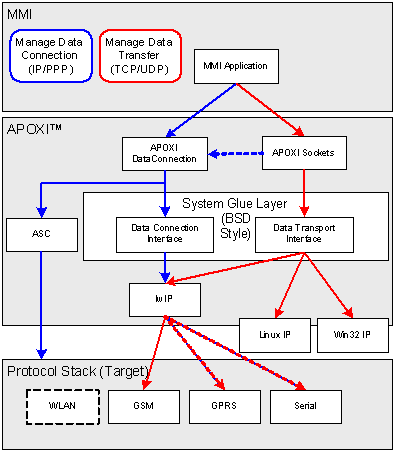
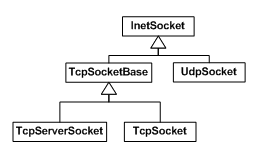

Sockets Overview
1 Introduction
APOXI Socket classes provide a generic interface to IP based protocols. The interfaces are based on the BSD Socket interface. The Socket module is an add-on APOXI module and can be added on demand.
2 System Architecture
With the help from APOXI Socket module, programmers can develop their own applications independent of the
native TCP/IP protocol stack and use the common C++ coding style of APOXI. The TCP/IP protocol stack
supported now is WINDOWS socket under the host simulator environment and lwIP on the target. APOXI Sockets
provide easy to use C++ interfaces and they are easily portable to other systems.
APOXI Sockets will care for proper data connections such as:
APOXI Sockets do not implement UDP or TCP protocols themselves. They are utilizing an existing IP stack system
with a BSD style socket interface. On top of this BSD style socket interface, APOXI Socket cares for correct
connection handling and interaction with the rest of the system. The native BSD style socket interface is abstracted
by class SysSocket, the native DNS resolution is abstracted by class SysDnsClient. Current implementations for
SysSocket and SysDnsClient exist for Winsocks (Windows host simulation) and lwIP. Any other BSD style socket
interface can easily be interfaced to by providing dedicated implementations of class SysSocket and
SysDnsClient.
The position of Sockets in APOXI is given in Figure 1.
 |
Figure 1. Position of Socket module in APOXI
Currently, APOXI is using different implementations for UDP/IP and TCP/IP protocols as shown in Figure 2.
Figure 2. APOXI Sockets
3 Sockets
Most important classes of APOXI Sockets are InetSocket and its derived classes UdpSocket, TcpSocket, and TcpServerSocket. These classes expose the main interfaces to open the socket, send and receive data, and close the socket.
APOXI Sockets can be configured to work in non-blocking mode (default) and in blocking mode (deprecated). The socket class library available in APOXI is shown in Figure 3.
 |
Figure 3. Class diagram of Sockets
4 Data Connection
The notion of a data connection is one of the fundaments of APOXI Sockets. It defines a bearer for a socket, i.e. for an IP-connection over CSD, PSD, or Serial. The attributes of a data connection are defined in DataConnProfile and its derived classes. All the data connections are controlled by the DataConnManager.
A data connection uses two timers, an idle and a linger timer:
5 Data Connection Manager
The data connection manager is used to manage different data connections that may exist in the system. It allows to register, unregister, and access the currently available data connections.
6 Data Connection Profile, Data Connection Profile Manager, and Data Connection Profile Storage
DataConnProfile is the base class of data connection bearer settings. The data connection profiles are controlled by the DataConnProfileManager. The data connection profile manager stores persistent profiles using a DataConnProfileStorage. It also controls temporary profiles which are not stored.
DataConnProfileStorage defines an interface to a storage for DataConnProfile objects. It is used by DataConnProfileManager to store and retrieve DataConnProfile settings. Where to store the connection profile is up to the user of APOXI Sockets. DataConnProfileStorage functionality will be used exclusively by the DataConnProfileManager. In order to avoid dependencies on specifics of storing the profiles, APOXI does not provide an implementation of profile storage.
7 Connection Management - Control Flow
When an application opens a socket, the DataConnManager will care to setup the proper data connection according to the DataConnProfile that is referenced by the socket. If a socket is not referencing a specific DataConnProfile the DataConnManager uses the default DataConnProfile.
If a socket operation requires to open a data connection, the socket will internally request from DataConnManager to setup the data connection. If an appropriate connection already exists it will be shared. If not, DataConnManager sets up the connection according to the settings defined in the data connection profile.
A data connection can be shared between multiple sockets and applications. If a socket is opened and a data connection is already established for the same connection profile, the socket will use the existing data connection. When the last socket using the data connection has been closed, the data connection will be shut down automatically.
If a connection request conflicts with existing data connection, voice calls, or other system resources, the application will get an appropriate error code.
8 Data Transfer - Data Flow
When data is available for reading or the underlying system is able to send data, the OnAsyncEvent() method of the socket is invoked with the according event type. For this the RTOS task represented by class SocketRxThread is waiting on a BSD select for all existing sockets. If a socket event occurs, SocketRxThread will wake up and send a SocketControlMsg to the application that owns the socket. SocketHandler, a mandatory member of each application that wants to use APOXI Socket interfaces, will listen for the SocketControlMsg and call the OnAsyncEvent() method of the corresponding socket. Send or connect requests invoke directly the according SysSocket methods.